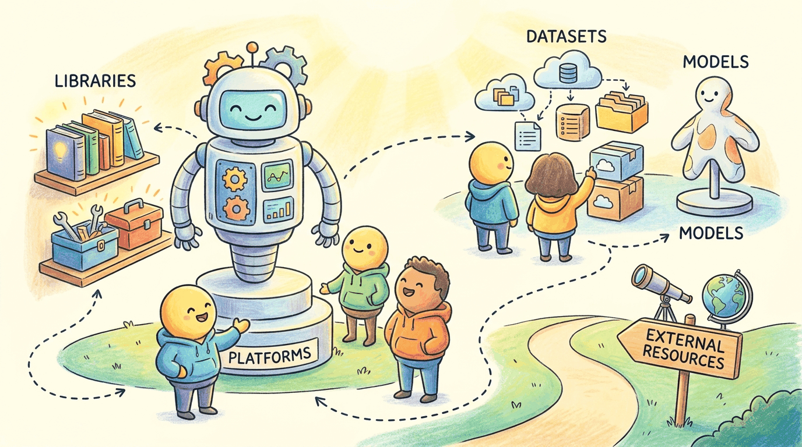

"Every industry thinks its AI problem is unique. Mostly it is the same problem with a different vocabulary."
Author's notebook
Part XI surveyed how LLMs are applied across industries: legal, financial, healthcare, education, cybersecurity, software, customer service, scientific research, and more. This chapter is the per-vertical vendor map: Harvey and Hebbia (legal), BloombergGPT (finance), Med-PaLM (healthcare), Khanmigo (education), Microsoft Security Copilot (cyber), and many others.
Industry tooling is mostly vendor SaaS. The exception is the vertical-specific open libraries:
pip install langchain-communitylangchain-community includes a long list of vertical-specific connectors (FHIR for healthcare, EDGAR for finance, CourtListener for legal, etc.) that save weeks of boilerplate.
Sections in This Chapter
- 60.1 Platforms A chapter from the Building Conversational AI textbook.
- 60.2 Libraries & Frameworks A chapter from the Building Conversational AI textbook.
- 60.3 Datasets & Benchmarks A chapter from the Building Conversational AI textbook.
- 60.4 Models A chapter from the Building Conversational AI textbook.
- 60.5 External Reading & Communities A chapter from the Building Conversational AI textbook.
What Comes Next
Part XII (Frontiers) closes the book. Chapter 65 wraps up with the frontier-research toolbox.